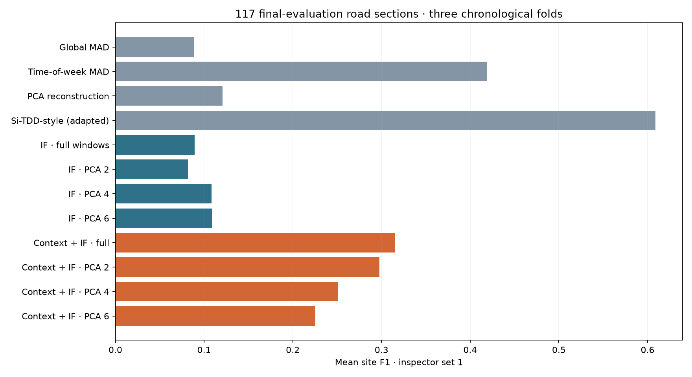
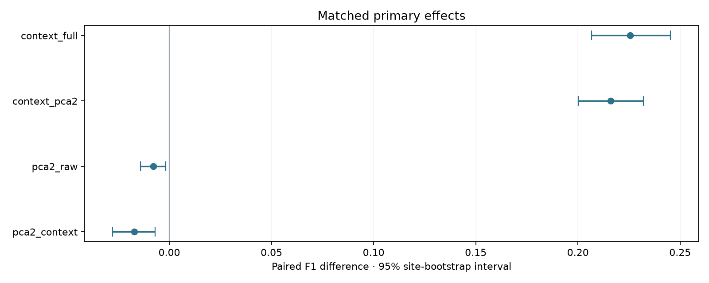
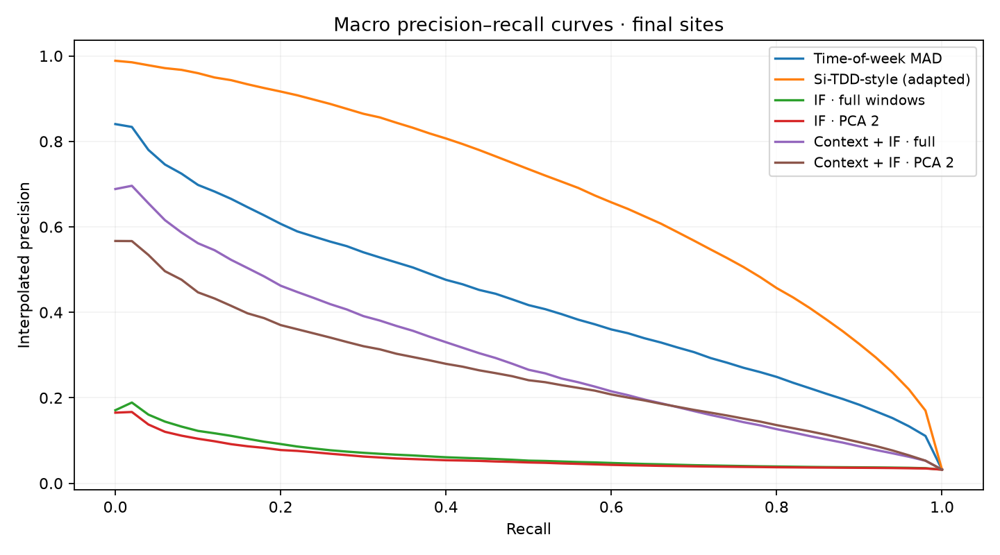
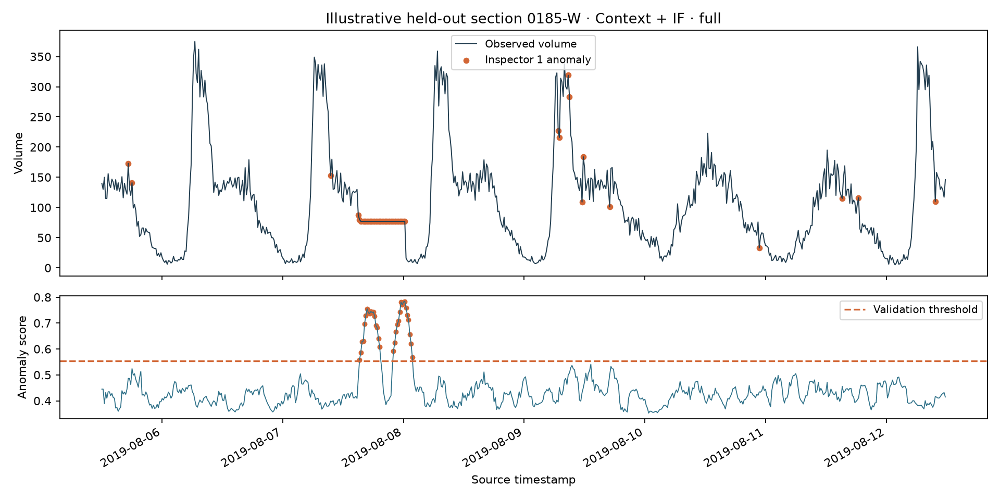

IFN737 classical implementation · new experiments completed November 2026
Temporal context and PCA
for traffic-volume anomaly detection
A matched empirical comparison on 147 AnoLT road sections, with 117 sections reserved from new global model selection and three chronological evaluation folds.
This project implements the anomaly-detection research in the final 2C report and aligned 2B presentation. It is separate from the earlier SCATS next-count forecaster. These new results extend the historical six-site pilot; they are not backdated progress claims. The labels represent unusual volume patterns, not confirmed crashes.
This report records the completed full local experiment. This source repository contains compact derived tables and figures; raw data, fitted weights and detailed score/cache arrays must be generated locally. Historical course PDFs/PPTX and upstream third-party scripts are not included. See README.md for the clean-clone workflow. Full-output verification requires complete reproduction.
Answers to the research questions
Time-of-week residualisation changes matched full-window Isolation Forest F1 by +0.2255 (95% site-bootstrap interval +0.2066 to +0.2453). Two-component PCA changes the contextual IF result by -0.0173 (-0.0278 to -0.0070). These are empirical differences on this benchmark, not universal guarantees. Compression must therefore be justified by its measured accuracy and cost trade-off rather than assumed beneficial.
The adapted Si-TDD-style baseline has the highest mean F1 in this comparison: 0.609, compared with 0.419 for time-of-week MAD and 0.315 for contextual full-window IF. The extra complexity of IF does not outperform the stronger contextual baselines here.
The locally reproducible example uses Context + IF · full, chosen among the four primary IF representations on development validation data. Its selection did not use final-site test results. All baselines and secondary PCA widths remain visible below, including methods that may outperform the example IF.
Data, allocation and chronology
The pinned AnoLT snapshot contains 147 road-section CSVs and 3,125,856 observations. All 147 Git object hashes and SHA-256 digests were verified. The earlier audit found 499 gaps longer than 15 minutes and 37,814 disagreements between inspector annotations. Valid zero counts are retained; windows crossing a timestamp discontinuity are excluded. Eight readings include the current observed interval and seven prior readings.
The six original pilot sections plus 24 seeded additional sections form the 30-site development group. The remaining 117 sections are excluded from new global hyperparameter selection. Earlier aggregate audit information was already available; raw final-site data are not claimed to have been wholly unseen. Allocation uses seed 2026 and is saved in protocol.json. Opposite directions sharing an ID prefix can span allocation groups, so geographic independence is not established.
Fold endpoints for fit/validation/test are 40/55/70%, 55/70/85% and 70/85/100% of each section's raw ordered rows. Test periods are disjoint within a section. Each fold fits earlier local data and calibrates on local validation labels. Thus the evaluation transfers a fixed procedure to locally fitted sections; it does not test one shared set of weights or zero-shot transfer.
Matched methods and calibration
Global MAD, time-of-week MAD, two-component PCA reconstruction and an adapted Si-TDD-style same-slot nearest-neighbour score are included. The matched detector is Isolation Forest on standardised eight-reading windows, either full or PCA-compressed (2 primary; 4 and 6 sensitivity components), with and without training-derived weekday/quarter-hour median–MAD residualisation.
All transformations fit training data only. Primary fitting retains earlier anomalies. One shared max-samples value (256) was selected from 128 and 256 on development validation F1 across the four primary representations, sites, folds and seeds. All forests use 100 trees and seeds 17, 42 and 91. The same setting is used for every representation. Si-TDD-style k=3 was selected from the source algorithm's six candidate values. Its score definition was independently checked; our validation calibration and fallback rules differ from the paper's reported evaluation, so no exact paper-score replication is claimed.
Every site/fold/method/seed threshold maximises validation set-1 F1 with ties favouring fewer alerts. It is frozen for test labels from both inspectors. If validation contains no positive labels, no alerts are issued. Labels are not model inputs; threshold calibration is label-assisted. Predictions are scored pointwise with no point adjustment.
Final-site detection results
Values first average forest seeds and chronological folds within a section, then average the 117 sections equally. Baselines have no random-seed repetitions. Inspector set 2 reuses the exact set-1-calibrated thresholds. False alerts/day uses 96 eligible observations as one equivalent observed day; gaps are not invented exposure. Average precision is zero for a fold without positive labels.

Paired representation effects and uncertainty
The primary contrasts isolate context and two-component PCA within the same detector procedure. Paired F1 differences are computed after averaging folds and seeds within each section. A seeded 1,000-draw site bootstrap supplies percentile intervals. Multiple contrasts and spatial dependence limit inferential claims; these intervals are descriptive evidence, not proof of universal superiority. For the contextual two-component PCA contrast, the shared-ID-prefix interval spans zero even when the site-bootstrap interval does not. The size and certainty of that effect therefore depend on how related directions are grouped. Shared-ID-prefix cluster sensitivity is saved separately in paired_effects.csv.


Precision–recall curves are interpolated on a common recall grid, averaging folds/seeds within section and then sections. They are not a pooled ranking of incomparable cross-site raw scores. AP in the metrics table is averaged from per-evaluation scores rather than computed from the interpolated curve.
Training contamination sensitivity
The primary run retains earlier anomalous training observations. This separate sensitivity removes set-1 anomalous training rows and any eight-reading training window touching one, using seed 42, frozen global settings and the same validation rule. The paired primary reference also uses seed 42. This is an intentionally label-informed sensitivity analysis, not the default deployable training policy.
Runtime, model size and memory
The following serial benchmark runs each representation in a fresh subprocess on the same 0185-E final-fold inputs, repeating seeds 17, 42 and 91. Fit time includes scaling, PCA where applicable and forest fitting. Context/window preparation is measured separately and excluded from these fit times. Test scoring uses identical eligible observations. Peak RSS includes the interpreter and libraries; it is not estimator-only allocation. Serialized size is an additional compactness measure. Small timing differences should not be overinterpreted.
Machine: macOS-26.6.2-arm64-arm-64bit-Mach-O. Exact versions and per-run timings are in environment-lock.txt and isolated_benchmark.csv. Main parallel-worker timings are diagnostic and should not replace this isolated comparison. Baseline diagnostic score timings cover all eligible windows, while IF diagnostics cover validation and test windows, so those columns are not cross-family cost comparisons. The dedicated benchmark uses OS peak RSS on macOS/Linux and a sampled 5 ms approximation on systems without the Unix resource module, recorded in rss_measurement.
False-alert analysis and a held-out example
Error tables separate zero/low/high counts, overnight observations, annotation disagreement and observations near gaps. Categories overlap. Inspect error_groups.csv and per-section records before interpreting aggregate precision. Fold and seed stability are retained in fold_metrics.csv and seed_sensitivity.csv. Episode descriptors measure eligible labelled runs at 15-minute resolution; they do not alter pointwise results or establish crash-response delay.

Scope achieved and remaining limits
The classical pipeline, matched context/PCA comparison, expanded site/period evaluation, annotation and contamination sensitivity, paired uncertainty, runtime/memory measurement and reusable example model are implemented and executed. The earlier report's RQ2 is now tested directly. Four- and six-component PCA are secondary checks; a negative compression result remains a research finding.
Selected procedural details were fixed here because the earlier report left them open: 100-tree forests, two max-sample candidates, three seeds and deterministic additional-site selection. No supervisor approval is implied. Context and threshold estimates may drift, geographic dependence remains possible, and benchmark labels do not identify anomaly causes. No external-city dataset, live monitoring, verified crash association, spatial model or quantum layer was evaluated. Those remain separate extensions after this classical baseline.
Recheck on 19 November 2026
The expanded source-to-score audit reproduced 30,312 metric rows and 108 fresh fits across pilot, development and final sections. All 25 regression tests passed. Input validation now rejects a known section/model mismatch, resumed jobs verify their inputs and output hashes, and the Unix-only import was removed from the portable runner. Detection results and frozen choices are unchanged. The no-resource memory path was exercised on this Mac; a full Windows-device run is not claimed. See the recheck record for scope and evidence. In the full local package, cache sidecars for the original jobs were bound after this audit and labelled accordingly; those sidecars are excluded from Git.
Use, reproduce and inspect
See README.md for setup, scoring, training another section and full reproduction. The notebook walks through the results. Source provenance and choices are frozen in protocol.json and selected_parameters.json. Verification is recorded in verification.json. Locally training the example creates an illustrative calibrated detector; binary weights are excluded from Git and anomaly scores are not probabilities.
Attribution
AnoLT data and algorithm reference: Taheri Sarteshnizi et al. (2026), Transportation Research Part C 184, 105536; pinned repository. The original upstream Si-TDD script is linked rather than copied into this repository; upstream terms continue to apply. Implementation uses scikit-learn Isolation Forest and PCA. Earlier IFN737 reports and presentation supplied the research plan. OpenAI Codex assisted with implementation, execution, checking and reporting. No quantum components are used.